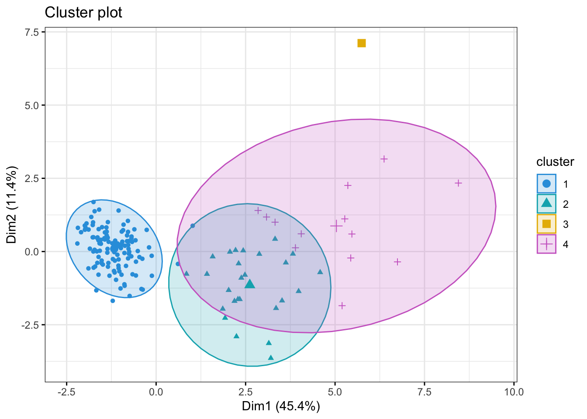
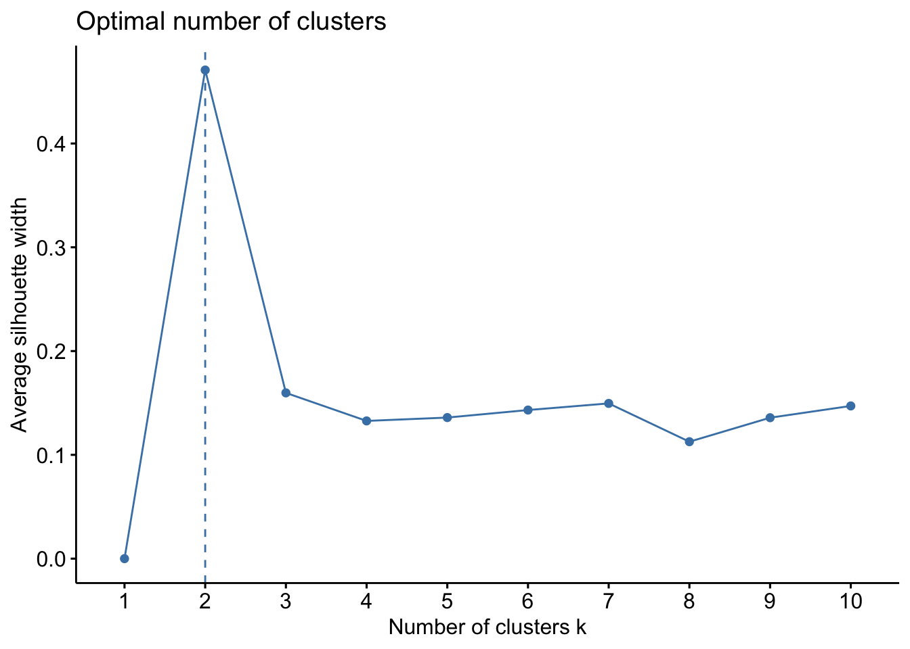
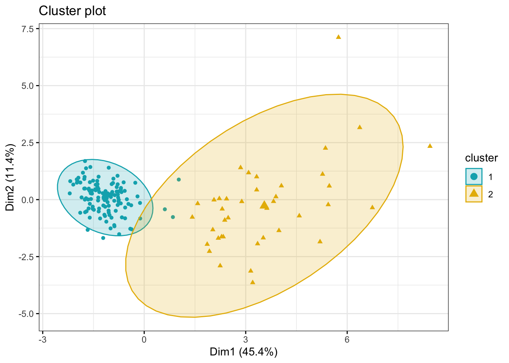

library(tidyverse)
library(readxl)
library(ggfortify)
library(factoextra)
library(readxl)Exercise 5A - Solutions: Intro to Regression in R
- Load packages
Part 1: Linear regression
- Load the data
boston.csv
df <- as_tibble(read.delim('../data/boston.csv', sep = ','))
head(df)# A tibble: 6 × 6
crim indus nox rm medv neighborhood
<dbl> <dbl> <dbl> <dbl> <dbl> <chr>
1 0.00632 2.31 0.538 6.58 24 Suburban
2 0.0273 7.07 0.469 6.42 21.6 Urban
3 0.0273 7.07 0.469 7.18 34.7 Rural
4 0.0324 2.18 0.458 7.00 33.4 Urban
5 0.0690 2.18 0.458 7.15 36.2 Suburban
6 0.0298 2.18 0.458 6.43 28.7 Suburban Neighborhoodis a categorical variable. We could make it a factor but it will also work as a character column (in the case of usinglm).Split the dataset into test and training data.
# Set seed to ensure reproducibility
set.seed(123)
#add an ID column to keep track of observations
df$ID <- 1:nrow(df)
train <- df %>% sample_frac(.75)
test <- anti_join(df, train, by = 'ID') - Fit the model
model <- lm(medv ~ rm + crim + neighborhood, data = train)summary(model)
Call:
lm(formula = medv ~ rm + crim + neighborhood, data = train)
Residuals:
Min 1Q Median 3Q Max
-19.920 -3.167 -0.468 2.746 35.052
Coefficients:
Estimate Std. Error t value Pr(>|t|)
(Intercept) -25.52560 3.08810 -8.266 2.43e-15 ***
rm 7.63165 0.49122 15.536 < 2e-16 ***
crim -0.22845 0.03525 -6.482 2.86e-10 ***
neighborhoodSuburban 0.07995 0.75050 0.107 0.915
neighborhoodUrban 3.66323 0.84058 4.358 1.70e-05 ***
---
Signif. codes: 0 '***' 0.001 '**' 0.01 '*' 0.05 '.' 0.1 ' ' 1
Residual standard error: 6.183 on 375 degrees of freedom
Multiple R-squared: 0.5573, Adjusted R-squared: 0.5525
F-statistic: 118 on 4 and 375 DF, p-value: < 2.2e-16rmandcrimhave a significant influence on the house price. An increase in the number of rooms increases the price since the coefficient is positive, whereas an increase in crime rate reduces the price. There is a significant difference in price between Rural and Urban zones, but not between Rural and Suburban. Rural is the reference level. Lastly, houses with 0 rooms cost -25k dollar. Perhaps the predictors should be centered before fitting the model around 0 sorm== 0 is the average number of rooms for better interpretability.If you wanted to know if there is a difference in the value of houses between the
SuburbanandUrbanneighborhood what could you do to the variableneighborhoodbefore modelling?
df <- df %>%
mutate(neighborhood= factor(neighborhood, levels=c("Urban", "Suburban", "Rural")))- For linear regression there is an assumption that the model residuals (errors) are normally distributed. An easy way visualize this is by simply calling
plot()on your model (see below). What do you think based on the plots?
#RMSE
par(mfrow=c(2,2))
plot(model)Overall the plots look okay. There are some outlines, but all of them are within cooks distance, i.e. they are not extreme. The model residuals are close to normally distributed.
- Now, use our test set to predict the response
medv(median value per house in 1000s).
y_pred <- predict(model, newdata = test)- Evaluate how well our model performs. There are different ways of doing this but lets use the classic measure of RMSE (Root Mean Square Error).
#RMSE
rmse <- sqrt(mean((test$medv - y_pred)^2))
rmse- Make a scatter plot to visualize how the predicted values fit with the observed values.
predPlot <- tibble(y_test = test$medv, y_pred=y_pred)
ggplot(predPlot, aes(x = y_test, y=y_pred)) +
geom_point(alpha = 0.7, size = 2) + # scatter points
geom_smooth(method = "lm", se = TRUE, color = "blue", linewidth = 1) +
theme_minimal()`geom_smooth()` using formula = 'y ~ x'Part 2: Logistic regression
For this part we will use the joined diabetes data since it has a categorical outcome (Diabetes yes or no). We will not use the oral Glucose measurements as predictors since this is literally how you define diabetes, so we’re loading the joined dataset we created in exercise 1, e.g. ‘diabetes_join.xlsx’ or what you have named it. N.B if you did not manage to finish making this dataset or forgot to save it, you can find a copy here: ../out/diabetes_join.Rdata. Navigate to the file in the file window of Rstudio and click on it. Click “Yes” to confirm that the file can be loaded in your environment and check that it has happened.
As the outcome we are studying, Diabetes, is categorical variable we will perform logistic regression. We select serum calcium levels (Serum_ca2), BMI and smoking habits (Smoker) as predictive variables.
- Read in the diabetes_join.xlsx dataset.
diabetes_join <- read_xlsx("../data/exercise1_diabetes_join.xlsx")
head(diabetes_join)# A tibble: 6 × 11
ID Sex Age BloodPressure BMI PhysicalActivity Smoker Diabetes
<chr> <chr> <dbl> <dbl> <dbl> <dbl> <chr> <dbl>
1 ID_34120 Female 28 75 25.4 92 Never 0
2 ID_27458 Female 55 72 24.6 86 Never 0
3 ID_70630 Male 22 80 24.9 139 Unknown 0
4 ID_13861 Female 56 72 37.1 64 Unknown 1
5 ID_68794 Female 21 62 23 82 Former 0
6 ID_64778 Female 54 76 33.8 63 Smoker 1
# ℹ 3 more variables: Serum_ca2 <dbl>, Married <chr>, Work <chr>- Logistic regression does not allow for any missing values in the outcome variable. Ensure that the variable
Diabetesdoes not have missing values AND that it is a factor variable.
diabetes_df <- diabetes_join %>%
filter(!is.na(Diabetes)) %>%
mutate(Diabetes= as.factor(Diabetes))- Split your data into training and test data. Take care that the two classes of the outcome variables are represented in both training and test data, and at similar ratios.
set.seed(123)
train <- diabetes_df %>% sample_frac(.75)
test <- anti_join(diabetes_df, train, by = 'ID') train_counts <- train[,-1] %>%
dplyr::select(where(is.character)) %>%
pivot_longer(everything(), names_to = "Variable", values_to = "Level") %>%
dplyr::count(Variable, Level, name = "Count")
train_counts# A tibble: 12 × 3
Variable Level Count
<chr> <chr> <int>
1 Married No 126
2 Married Yes 230
3 Sex Female 202
4 Sex Male 154
5 Smoker Former 80
6 Smoker Never 112
7 Smoker Smoker 115
8 Smoker Unknown 49
9 Work Private 189
10 Work Public 106
11 Work Retired 2
12 Work SelfEmployed 59test_counts <- test[,-1] %>%
dplyr::select(where(is.character)) %>%
pivot_longer(everything(), names_to = "Variable", values_to = "Level") %>%
dplyr::count(Variable, Level, name = "Count")
test_counts# A tibble: 12 × 3
Variable Level Count
<chr> <chr> <int>
1 Married No 39
2 Married Yes 79
3 Sex Female 63
4 Sex Male 55
5 Smoker Former 33
6 Smoker Never 31
7 Smoker Smoker 33
8 Smoker Unknown 21
9 Work Private 63
10 Work Public 35
11 Work Retired 2
12 Work SelfEmployed 18- Fit a logistic regression model with
Serum_ca2,BMIandSmokeras predictors andDiabetesas outcome, using your training data.
mod1 <- glm(Diabetes ~ Serum_ca2 + BMI + Smoker, data = train, family = 'binomial')
summary(mod1)
Call:
glm(formula = Diabetes ~ Serum_ca2 + BMI + Smoker, family = "binomial",
data = train)
Coefficients:
Estimate Std. Error z value Pr(>|z|)
(Intercept) -29.66172 9.24103 -3.210 0.00133 **
Serum_ca2 0.62235 0.91791 0.678 0.49777
BMI 0.77975 0.09837 7.927 2.25e-15 ***
SmokerNever -1.33474 0.63225 -2.111 0.03476 *
SmokerSmoker 1.71880 0.67054 2.563 0.01037 *
SmokerUnknown -0.27908 0.75901 -0.368 0.71310
---
Signif. codes: 0 '***' 0.001 '**' 0.01 '*' 0.05 '.' 0.1 ' ' 1
(Dispersion parameter for binomial family taken to be 1)
Null deviance: 493.34 on 355 degrees of freedom
Residual deviance: 122.91 on 350 degrees of freedom
AIC: 134.91
Number of Fisher Scoring iterations: 7- Check the model summary and try to determine whether you could potentially drop one of your variables? If so, make this alternative model and compare it to the original model. Is there a significant loss/gain, i.e. better fit when including the serum calcium levels as predictor?
mod2 <- glm(Diabetes ~ BMI + Smoker, data = train, family = binomial)
summary(mod2)
Call:
glm(formula = Diabetes ~ BMI + Smoker, family = binomial, data = train)
Coefficients:
Estimate Std. Error z value Pr(>|z|)
(Intercept) -23.84692 3.07881 -7.745 9.52e-15 ***
BMI 0.78180 0.09873 7.918 2.41e-15 ***
SmokerNever -1.32566 0.63378 -2.092 0.0365 *
SmokerSmoker 1.64646 0.65738 2.505 0.0123 *
SmokerUnknown -0.28021 0.75992 -0.369 0.7123
---
Signif. codes: 0 '***' 0.001 '**' 0.01 '*' 0.05 '.' 0.1 ' ' 1
(Dispersion parameter for binomial family taken to be 1)
Null deviance: 493.34 on 355 degrees of freedom
Residual deviance: 123.38 on 351 degrees of freedom
AIC: 133.38
Number of Fisher Scoring iterations: 7anova(mod1, mod2, test = "Chisq")Analysis of Deviance Table
Model 1: Diabetes ~ Serum_ca2 + BMI + Smoker
Model 2: Diabetes ~ BMI + Smoker
Resid. Df Resid. Dev Df Deviance Pr(>Chi)
1 350 122.91
2 351 123.38 -1 -0.46762 0.4941- Now, use your model to predict Diabetes class based on your test set. What does the output of the prediction mean?
y_pred <- predict(mod2, test, type = "response")- Lets evaluate the performance of our model. As we are performing classification, measures such as mse/rmse will not work, instead we will calculate the accuracy. In order to get the accuracy you must first convert our predictions into Diabetes class labels (e.g. 0 or 1).
y_pred <- as.factor(ifelse(y_pred > 0.5, 1, 0))
caret::confusionMatrix(y_pred, test$Diabetes)Confusion Matrix and Statistics
Reference
Prediction 0 1
0 60 4
1 2 52
Accuracy : 0.9492
95% CI : (0.8926, 0.9811)
No Information Rate : 0.5254
P-Value [Acc > NIR] : <2e-16
Kappa : 0.8979
Mcnemar's Test P-Value : 0.6831
Sensitivity : 0.9677
Specificity : 0.9286
Pos Pred Value : 0.9375
Neg Pred Value : 0.9630
Prevalence : 0.5254
Detection Rate : 0.5085
Detection Prevalence : 0.5424
Balanced Accuracy : 0.9482
'Positive' Class : 0
Part 3: K-Means Clustering
In this part we will run K-means clustering. To mix it up a bit we will work with a new dataset from patients with kidney disease. The dataset contains approximately 20 biological measures (variables) collected across 400 patients. The outcome is the classification variable which denotes whether a person suffers from ckd=chronic kidney disease ckd or not notckd.
age - age
bp - blood pressure
rbc - red blood cells
pc - pus cell
pcc - pus cell clumps
ba - bacteria
bgr - blood glucose random
bu - blood urea
sc - serum creatinine
sod - sodium
pot - potassium
hemo - hemoglobin
pcv - packed cell volume
wc - white blood cell count
rc - red blood cell count
htn - hypertension
dm - diabetes mellitus
cad - coronary artery disease
appet - appetite
pe - pedal edema
ane - anemia
class - classification - Load in the dataset named
kidney_disease.Rdata.
#in case
load("../data/kidney_disease.Rdata")- Before running K-means clustering please remove rows with any missing values across all variables in your dataset - yes, you will lose quite a lot of rows. Consider which columns you can use and if you have to do anything to them before clustering?
# Set seed to ensure reproducibility
set.seed(123)
# remove any missing values
kidney <- kidney %>%
drop_na()
# scale numeric values and only use these
kidney_num <- kidney %>%
mutate(across(where(is.numeric), scale)) %>%
dplyr::select(where(is.numeric))- Run the k-means clustering algorithm with 4 centers on the data. Look at the clusters you have generated.
# Set seed to ensure reproducibility
set.seed(123)
# run kmeans
kmeans_res <- kidney_num %>%
kmeans(centers = 4, nstart = 25)
kmeans_resK-means clustering with 4 clusters of sizes 119, 26, 1, 13
Cluster means:
age bp bgr bu sc sod pot
1 -0.1606270 -0.1812766 -0.3421452 -0.3945903 -0.4097699 0.3696236 -0.09212654
2 0.6371017 0.2644634 1.2990025 0.3971316 0.3647090 -0.9188501 -0.08119564
3 0.1637295 1.4325099 1.4314972 2.4018426 1.1140015 -0.7849388 12.22513695
4 0.1835566 1.0202582 0.4238246 2.6329989 2.9358598 -1.4853976 0.06530832
hemo pcv wc rc
1 0.4923705 0.4918043 -0.2332733 0.4495784
2 -1.2670571 -1.2727402 0.9780463 -1.1415414
3 -1.9462630 -2.0832161 -1.1005490 -1.9608496
4 -1.8232572 -1.7961726 0.2639126 -1.6814542
Clustering vector:
[1] 2 4 2 2 2 4 2 2 2 2 4 4 4 2 1 2 2 2 3 4 1 2 2 4 1 2 2 2 2 2 2 4 2 4 4 2 2
[38] 2 4 2 4 2 4 1 1 1 1 1 1 1 1 1 1 1 1 1 1 1 1 1 1 1 1 1 1 1 1 1 1 1 1 1 1 1
[75] 1 1 1 1 1 1 1 1 1 1 1 1 1 1 1 1 1 1 1 1 1 1 1 1 1 1 1 1 1 1 1 1 1 1 1 1 1
[112] 1 1 1 1 1 1 1 1 1 1 1 1 1 1 1 1 1 1 1 1 1 1 1 1 1 1 1 1 1 1 1 1 1 1 1 1 1
[149] 1 1 1 1 1 1 1 1 1 1 1
Within cluster sum of squares by cluster:
[1] 409.4247 267.2635 0.0000 123.4990
(between_SS / total_SS = 54.0 %)
Available components:
[1] "cluster" "centers" "totss" "withinss" "tot.withinss"
[6] "betweenss" "size" "iter" "ifault" kmeans_res$centers age bp bgr bu sc sod pot
1 -0.1606270 -0.1812766 -0.3421452 -0.3945903 -0.4097699 0.3696236 -0.09212654
2 0.6371017 0.2644634 1.2990025 0.3971316 0.3647090 -0.9188501 -0.08119564
3 0.1637295 1.4325099 1.4314972 2.4018426 1.1140015 -0.7849388 12.22513695
4 0.1835566 1.0202582 0.4238246 2.6329989 2.9358598 -1.4853976 0.06530832
hemo pcv wc rc
1 0.4923705 0.4918043 -0.2332733 0.4495784
2 -1.2670571 -1.2727402 0.9780463 -1.1415414
3 -1.9462630 -2.0832161 -1.1005490 -1.9608496
4 -1.8232572 -1.7961726 0.2639126 -1.6814542- Visualize the results of your clustering. Do 4 clusters seems like a good fit for our data in the first two dimensions (Dim1 and Dim2)? How about if you have a look at Dim3 or Dim4?
fviz_cluster(kmeans_res, data = kidney_num, axes=c(1,2),
palette = c("#2E9FDF", "#00AFBB", "#E7B800", "orchid3"),
geom = "point",
ellipse.type = "norm",
ggtheme = theme_bw())Too few points to calculate an ellipse
- Investigate the best number of clusters for this dataset. Use the
silhouettemetric.
kidney_num %>%
fviz_nbclust(kmeans, method = "silhouette")
- Re-do the clustering (plus visualization) with the optimal number of clusters.
# Set seed to ensure reproducibility
set.seed(123)
#run kmeans
kmeans_res <- kidney_num %>%
kmeans(centers = 2, nstart = 25)
kmeans_resK-means clustering with 2 clusters of sizes 120, 39
Cluster means:
age bp bgr bu sc sod pot
1 -0.1826253 -0.1901587 -0.344100 -0.3887455 -0.409560 0.3622341 -0.0907221
2 0.5619239 0.5851036 1.058769 1.1961401 1.260185 -1.1145665 0.2791449
hemo pcv wc rc
1 0.477263 0.4767479 -0.2093952 0.4450345
2 -1.468501 -1.4669168 0.6442931 -1.3693368
Clustering vector:
[1] 2 2 2 2 2 2 2 2 2 2 2 2 2 2 1 2 2 2 2 2 1 2 2 2 1 2 2 2 2 2 1 2 2 2 2 2 2
[38] 2 2 2 2 2 2 1 1 1 1 1 1 1 1 1 1 1 1 1 1 1 1 1 1 1 1 1 1 1 1 1 1 1 1 1 1 1
[75] 1 1 1 1 1 1 1 1 1 1 1 1 1 1 1 1 1 1 1 1 1 1 1 1 1 1 1 1 1 1 1 1 1 1 1 1 1
[112] 1 1 1 1 1 1 1 1 1 1 1 1 1 1 1 1 1 1 1 1 1 1 1 1 1 1 1 1 1 1 1 1 1 1 1 1 1
[149] 1 1 1 1 1 1 1 1 1 1 1
Within cluster sum of squares by cluster:
[1] 433.7458 647.1223
(between_SS / total_SS = 37.8 %)
Available components:
[1] "cluster" "centers" "totss" "withinss" "tot.withinss"
[6] "betweenss" "size" "iter" "ifault" fviz_cluster(kmeans_res, data = kidney_num,
palette = c("#00AFBB", "#E7B800"),
geom = "point",
ellipse.type = "norm",
ggtheme = theme_bw())
- Now, try to figure out what the two clusters might represent. There are different ways to do this, but one easy way would be to simply compare the
clusters IDsfrom the Kmeans output with one or more of the categorical variables from the dataset. You could usecount()ortable()for this.
table(kidney$htn, kmeans_res$cluster)
1 2
no 118 7
yes 2 32table(kidney$dm, kmeans_res$cluster)
1 2
no 119 12
yes 1 27table(kidney$classification, kmeans_res$cluster)
1 2
ckd 4 39
notckd 116 0- The
withinessmeasure (within cluster variance/spread) is much larger for one cluster then the other, what biological reason could there be for that?